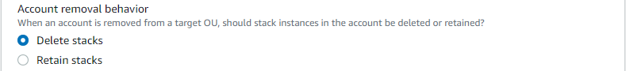

Die vorliegende Übersetzung wurde maschinell erstellt. Im Falle eines Konflikts oder eines Widerspruchs zwischen dieser übersetzten Fassung und der englischen Fassung (einschließlich infolge von Verzögerungen bei der Übersetzung) ist die englische Fassung maßgeblich.
Erstellen eines Stack-Sets
Sie können ein Stack-Set mithilfe der AWS Management Console oder mithilfe der AWS CloudFormation-Befehle in der AWS CLI erstellen. Sie können ein Stack-Set entweder mit self-managed- oder mit service-managed- Berechtigungen erstellen.
Mit self-managed-Berechtigungen können Sie Stack-Instances für bestimmte AWS-Konten in bestimmten Regionen bereitstellen. Dazu müssen Sie zunächst die erforderlichen IAM-Rollen erstellen, um eine Vertrauensstellung zwischen dem Konto, von dem aus Sie das Stack-Set verwalten, und dem Konto, für das Sie Stack-Instances bereitstellen, herzustellen.
Mit service-managed-Berechtigungen können Sie Stack-Instances für Konten bereitstellen, die von AWS Organizations in bestimmten Regionen verwaltet werden. Mit diesem Modell müssen Sie nicht die erforderlichen IAM-Rollen erstellen. StackSets erstellt die IAM-Rollen für Sie. Sie können auch automatische Bereitstellungen für Konten aktivieren, die zukünftig einer Zielorganisation oder Organisationseinheit (OU) hinzugefügt werden. Wenn automatische Bereitstellungen aktiviert sind, löscht StackSets Stack-Instances automatisch von einem Konto, wenn es aus einer Zielorganisation oder OU entfernt wird.
Themen
Erstellen eines Stack-Sets mit selbstverwalteten Berechtigungen
Themen
Erstellen eines Stack-Sets mit selbstverwalteten Berechtigungen mithilfe der AWS Management Console
Öffnen Sie die AWS CloudFormation-Konsole unter https://console.aws.amazon.com/cloudformation
. -
Wählen Sie im Navigationsbereich StackSets aus.
-
Wählen Sie oben auf der Seite StackSets die Option Create StackSet (StackSet erstellen) aus.
-
Wählen Sie unter Prerequisite - Prepare template (Voraussetzung: Vorbereiten der Vorlage) die Option Use a sample template (Beispielvorlage verwenden) aus.
-
Wählen Sie unter Select a sample template (Beispielvorlage auswählen) im Dropdown-Menü die Vorlage Enable AWS config (AWS-Konfiguration aktivieren) aus. Klicken Sie auf Next (Weiter).

-
Geben Sie auf der Seite Specify StackSet details (StackSet-Details angeben) die folgenden Informationen ein.
-
Legen Sie einen Namen für das Stack-Set fest. Die Namen von Stack-Sets müssen mit einem Buchstaben beginnen und dürfen nur Buchstaben, Ziffern und Bindestriche enthalten. In diesem Tutorial wird der Name
my-awsconfig-stacksetverwendet. -
Sie werden aufgefordert, Werte für Parameter anzugeben, die von AWS Config verwendet werden. Weitere Informationen zu diesen Parametern finden Sie unter Einrichten von AWS Config mit der Konsole im Entwicklerhandbuch für AWS Config. In dieser Anleitung behalten wir für alle AWS Config-Parameter die Standardeinstellungen bei.
-
Sie können Amazon Simple Notification Service (SNS)-Aktualisierungen per E-Mail, basierend auf Protokollinhalten, mithilfe der Parameter TopicARN und NotificationEmail konfigurieren. Für die Zwecke dieser Anleitung verzichten wir auf das Konfigurieren von Amazon SNS-Aktualisierungen.
-
Sie können den Übermittlungskanal für Aktualisierungen und Benachrichtigungen mithilfe der Parameter DeliveryChannelName und Frequency konfigurieren. Weitere Informationen über den Übermittlungskanal in AWS Config finden Sie unter Verwalten des Übermittlungskanals im AWS Config-Entwicklerhandbuch. Für die Zwecke dieser Anleitung behalten wir in diesem Bereich die Standardeinstellungen bei.
-
-
Wählen Sie Next (Weiter) aus, wenn Sie alle gewünschten Parameter für AWS Config angegeben haben.
-
Fügen Sie auf der Seite Configure StackSet options (StackSet-Optionen konfigurieren) einen Tag hinzu, indem Sie ein Schlüssel-Wert-Paar angeben. Im Rahmen dieser Anleitung erstellen wir ein Tag mit dem Namen Stage (Stufe) und dem Wert Test. Tags, die Sie für Stack-Sets übernehmen, werden für alle Ressourcen übernommen, die von Ihren Stacks erstellt werden. Weitere Informationen zur Verwendung von Tags in AWS finden Sie unter Verwendung von Kostenzuordnungs-Tags im AWS Billing and Cost Management-Benutzerhandbuch.
Geben Sie keine Berechtigungen an.
-
Wählen Sie für Execution configuration (Ausführungskonfiguration), Active (Aktiv), sodass StackSets gleichzeitig konfliktfreie Vorgänge ausführt und widersprüchliche Vorgänge in die Warteschlange stellt. Nachdem widersprüchliche Vorgänge abgeschlossen sind, startet StackSets Vorgänge in der Warteschlange in der Reihenfolge der Anforderung.
Anmerkung
Wenn es bereits laufende oder in die Warteschlange gestellte Vorgänge gibt, stellt StackSets alle eingehenden Vorgänge in die Warteschlange ein, auch wenn sie keine Konflikte verursachen.
Sie können die Ausführungskonfiguration Ihres Stack-Sets nicht ändern, solange für dieses Stack-Set laufende oder in die Warteschlange gestellte Vorgänge laufen.
-
Wählen Sie Next (Weiter).
-
Geben Sie auf der Seite Set deployment options (Bereitstellungsoptionen festlegen) die Konten und Regionen an, in denen Stacks in Ihrem Stack-Set bereitgestellt werden sollen.
AWS CloudFormation stellt Stacks in den angegebenen Konten innerhalb der ersten Region bereit und fährt dann mit der jeweils nächsten Region fort, solange die Bereitstellungsfehler für eine Region eine festgelegte Fehlertoleranz nicht überschreiten.
-
Wählen Sie für Accounts (Konten) die Option Deploy stacks in accounts (Stacks in Konten bereitstellen) aus. Fügen Sie Ihre Zielkonto-Zahlen in das Textfeld ein und trennen Sie dabei die einzelnen Zahlen durch Kommas.
-
Für Specify regions (Regionen angeben) wählen Sie Region USA Ost (N.-Virginia) aus. Wiederholen Sie den Vorgang für Region USA West (Oregon). Wählen Sie den Pfeil neben Region USA West (Oregon) aus, um sie als ersten Eintrag in der Liste zu positionieren. Die Reihenfolge der Regionen unter Specify regions (Regionen angeben) legt die Reihenfolge ihrer Bereitstellung fest.
-
Für Deployment options (Bereitstellungsoptionen):
-
Für Maximum concurrent accounts (Maximale Anzahl paralleler Konten) behalten Sie die Standardwerte Number (Zahl) und 1 bei.
Dies bewirkt, dass AWS CloudFormation Ihren Stack jeweils nur in einem Konto bereitstellt.
-
Behalten Sie für Failure tolerance (Fehlertoleranz) die Standardwerte Number (Zahl) und 0 bei.
Dies bedeutet, dass maximal eine Stack-Bereitstellung in einer der angegebenen Regionen fehlschlagen kann, bevor AWS CloudFormation die Bereitstellung in der aktuellen Region stoppt und die Bereitstellung in den verbleibenden Regionen abbricht.
-
-
Für Parallelität der Region:
-
Wählen Sie Sequential (Sequenziell) oder Parallel aus, um die StackSets-Bereitstellungs-Reihenfolge für bestimmte Regionen zu bestimmen. Standardmäßig ist Sequenziell ausgewählt.
Klicken Sie auf Next (Weiter).
-

-
-
Überprüfen Sie Ihre Auswahl und die Eigenschaften Ihres Stack-Sets auf der Seite Review. Um Änderungen vorzunehmen, wählen Sie Edit (Bearbeiten) im Bereich, in dem Sie Eigenschaften ändern möchten. Bevor Sie das Stack-Set erstellen können, müssen Sie das Kontrollkästchen im Bereich Capabilities (Funktionalitäten) markieren. Sie erkennen damit an, dass einige der Ressourcen, die Sie mit dem Stack-Set erstellen, unter Umständen neue IAM-Ressourcen und Berechtigungen erfordern. Weitere Informationen zu eventuell erforderlichen Berechtigungen finden Sie unter Bestätigung der IAM-Ressourcen in AWS-CloudFormation-Vorlagen in dieser Anleitung. Wenn Sie bereit sind, Ihr Stack-Set zu erstellen, wählen Sie Submit (Einsenden).

-
AWS CloudFormation beginnt mit dem Erstellen Ihres Stack-Sets. Auf der Seite mit den StackSet-Details, die beim Auswählen von Submit (Einsenden) geöffnet wird, können Sie Fortschritt und Status beim Erstellen der Stacks in Ihrem Stack-Set verfolgen.

Erstellen eines Stack-Sets mit selbstverwalteten Berechtigungen mithilfe der AWS CLI
Wenn Sie Stack-Sets mithilfe von AWS CLI-Befehlen erstellen, führen Sie zwei separate Befehle aus: create-stack-set zum Hochladen Ihrer Vorlage und Erstellen des Stack-Set-Containers und create-stack-instances zum Erstellen der Stacks in Ihrem Stack-Set. Führen Sie zuerst den AWS CLI-Befehl create-stack-set aus, um die AWS CloudFormation-Beispielvorlage hochzuladen, die AWS Config aktiviert, und starten Sie dann das Erstellen des Stack-Sets.
-
Öffnen Sie die AWS CLI.
-
Führen Sie den folgenden Befehl aus.
Geben Sie als Parameter
--template-urldie URL des Amazon S3-Buckets an, in dem Sie die Vorlage speichern. Im Rahmen dieser Anleitung verwenden wirmy-awsconfig-stacksetals Wert des Parameters--stack-set-name. Wir aktivieren auch--managed-executionsodass StackSets gleichzeitig konfliktfreie Vorgänge ausführt und widersprüchliche Vorgänge in die Warteschlange stellt. Nachdem widersprüchliche Vorgänge abgeschlossen sind, startet StackSets Vorgänge in der Warteschlange in der Reihenfolge der Anforderung.Anmerkung
Wenn es bereits laufende oder in die Warteschlange gestellte Vorgänge gibt, stellt StackSets alle eingehenden Vorgänge in die Warteschlange ein, auch wenn sie keine Konflikte verursachen.
Sie können die Ausführungskonfiguration Ihres Stack-Sets nicht ändern, solange für dieses Stack-Set laufende oder in die Warteschlange gestellte Vorgänge laufen.
aws cloudformation create-stack-set \ --stack-set-name my-awsconfig-stackset \ --template-url https://s3.amazonaws.com/cloudformation-stackset-sample-templates-us-east-1/EnableAWSConfig.yml -
Nachdem der Befehl
create-stack-setabgeschlossen ist, führen Sie den Befehllist-stack-setsaus, um festzustellen, ob Ihr Stack erstellt wurde. Ihr neues Stack-Set sollte in den Ergebnissen vorhanden sein.aws cloudformation list-stack-sets -
Führen Sie den
create-stack-instances-Befehl AWS CLI aus, um Stack-Instances zu Ihrem Stack-Set hinzufügen. Im Rahmen dieser Anleitung verwenden wirus-west-2undus-east-1als Werte für den Parameter--regions.Legen Sie die Fehlertoleranz und die maximale Anzahl gleichzeitiger Konten fest, indem Sie im Parameter
FailureToleranceCountwie im folgenden Beispiel den Wert für0aufMaxConcurrentCountund für1auf--operation-preferencesfestlegen. Wenn Sie stattdessen Prozentwerte sehen möchten, verwenden SieFailureTolerancePercentageoderMaxConcurrentPercentage. Für die Zwecke dieser Anleitung verwenden wir die Anzahl und keine Prozentwerte.Anmerkung
Der Wert von
MaxConcurrentCounthängt vom Wert vonFailureToleranceCountab.MaxConcurrentCountist höchstens eins mehr alsFailureToleranceCount.aws cloudformation create-stack-instances \ --stack-set-name my-awsconfig-stackset \ --accounts '["account_ID_1","account_ID_2"]' \ --regions '["region_1","region_2"]' \ --operation-preferences FailureToleranceCount=0,MaxConcurrentCount=1Anmerkung
Die Parallelität der StackSet-Instance-Bereitstellungen im Vorgang hängt vom Wert von
FailureToleranceCount-MaxConcurrentCountab und ist höchstens eins mehr alsFailureToleranceCount.Wichtig
Warten Sie, bis der Vorgang abgeschlossen ist, bevor Sie einen anderen Vorgang starten. Sie können nur jeweils einen Vorgang ausführen.
-
Vergewissern Sie sich, dass die Stack-Instances erfolgreich erstellt wurden. Führen Sie
DescribeStackSetOperationmit deroperation-idaus, die bei Schritt 4 zurückgegeben wurde.aws cloudformation describe-stack-set-operation \ --stack-set-name my-awsconfig-stackset \ --operation-idoperation_ID
Erstellen eines Stack-Set mit serviceverwalteten Berechtigungen
Themen
Überlegungen beim Erstellen eines Stack-Sets mit serviceverwalteten Berechtigungen
Bevor Sie ein Stack-Set mit serviceverwalteten Berechtigungen erstellen, sollten Sie Folgendes beachten:
-
StackSets mit vom Service verwalteten Berechtigungen werden im Verwaltungskonto erstellt, einschließlich StackSets, die von delegierten Administratoren erstellt werden.
-
Ihr Stack-Set kann auf Ihre gesamte Organisation oder bestimmte Organisationseinheiten (OUs) anvisieren. Wenn Ihr Stack-Set Ihre Organisation als Ziel angibt, hat es auch alle Konten in allen OUs in der Organisation als Ziel. Wenn Ihr Stack-Set bestimmte OUs als Ziel angibt, hat es auch alle Konten in diesen OUs als Ziel.
-
Wenn Ihr Stack-Set eine übergeordnete OU anvisiert, visiert das Stack-Set auch untergeordnete OUs an.
-
Mehrere Stack-Sets können dieselbe Organisation oder OU anvisieren.
-
Ihr Stack-Set kann keine Konten außerhalb Ihrer Organisation anvisieren.
-
Ihr Stack-Set kann keine verschachtelten Stacks bereitstellen.
-
StackSets stellt keine Stack-Instances auf dem Verwaltungskonto des Unternehmens bereit, selbst wenn sich das Verwaltungskonto in Ihrer Organisation oder in einer Organisationseinheit Ihrer Organisation befindet.
-
Die automatische Bereitstellung wird auf Stack-Set-Ebene festgelegt. Automatische Bereitstellungen können nicht selektiv für OUs, Konten oder Regionen angepasst werden.
-
Die Berechtigungen der IAM-Prinzipal-Entität (Benutzer, Rolle oder Gruppe), mit der Sie sich beim Verwaltungskonto der Organisation anmelden, bestimmen, ob Sie zur Bereitstellung mit StackSets berechtigt sind. Eine IAM-Beispielrichtlinie, die Berechtigungen für die Bereitstellung in einer Organisation erteilt, finden Sie unter Beispielrichtlinie, die serviceverwaltete Stack-Set-Berechtigungen gewährt.
-
Delegierte Administratoren haben volle Berechtigungen für die Bereitstellung auf Konten Ihrer Organisation. Das Verwaltungskonto kann delegierte Administratorberechtigungen nicht auf die Bereitstellung auf bestimmten Organisationseinheiten oder die Durchführung bestimmter Operationen für Stack-Sets beschränken.
Erstellen eines Stack-Sets mit serviceverwalteten Berechtigungen mithilfe der AWS CloudFormation-Konsole
-
Öffnen Sie die AWS CloudFormation-Konsole unter https://console.aws.amazon.com/cloudformation
. -
Wählen Sie im Navigationsbereich StackSets aus.
-
Wählen Sie oben auf der Seite StackSets die Option Create StackSet (StackSet erstellen) aus.
-
Wählen Sie unter Prepare template (Vorlage vorbereiten) den Wert Template is ready (Vorlage ist bereit) aus.
-
Wählen Sie unter Specify template (Vorlage angeben) entweder die URL für den S3-Bucket, der Ihre Stack-Vorlage enthält, aus oder laden Sie eine Stack-Vorlagendatei hoch. Wählen Sie Next (Weiter).
-
Geben Sie auf der Seite Specify StackSet details (StackSet-Details angeben) einen Namen für das Stack-Set an, geben Sie Parameter an und wählen Sie dann Next (Weiter) aus.
-
Geben Sie auf der Seite Configure StackSet options (StackSet-Optionen konfigurieren) unter Tags alle Tags an, die auf Ressourcen im Stack angewendet werden sollen.
-
Wählen Sie unter Permissions (Berechtigungen) die Option Service-managed permissions (Serviceverwaltete Berechtigungen) aus.
Wenn der vertrauenswürdige Zugriff mit AWS Organizations deaktiviert ist, wird ein Banner angezeigt. Vertrauenswürdiger Zugriff ist erforderlich, um ein Stack-Set mit serviceverwalteten Berechtigungen zu erstellen oder zu aktualisieren. Nur der Administrator im Verwaltungskonto der Organisation verfügt über Berechtigungen für Aktivieren des vertrauenswürdigen Zugriffs mit AWS Organizations.

-
Wählen Sie für Execution configuration (Ausführungskonfiguration), Active (Aktiv), sodass StackSets gleichzeitig konfliktfreie Vorgänge ausführt und widersprüchliche Vorgänge in die Warteschlange stellt. Nachdem widersprüchliche Vorgänge abgeschlossen sind, startet StackSets Vorgänge in der Warteschlange in der Reihenfolge der Anforderung.
Anmerkung
Wenn es bereits laufende oder in die Warteschlange gestellte Vorgänge gibt, stellt StackSets alle eingehenden Vorgänge in die Warteschlange ein, auch wenn sie keine Konflikte verursachen.
Sie können die Ausführungskonfiguration Ihres Stack-Sets nicht ändern, solange für dieses Stack-Set laufende oder in die Warteschlange gestellte Vorgänge laufen.
-
Wählen Sie Weiter aus, um fortzufahren und den vertrauenswürdigen Zugriff zu aktivieren, falls er noch nicht aktiviert ist.
-
Wählen Sie auf der Seite Set deployment options (Bereitstellungsoptionen festlegen) unter Deployment targets (Bereitstellungsziele) die Konten in Ihrer Organisation für die Bereitstellung aus.
-
Wählen Sie Deploy to organization (In Organisation bereitstellen) aus, um für alle Konten in Ihrer Organisation bereitzustellen.

-
Wählen Deploy to organizational units (OUs) (Für Organisationseinheiten (OUs) bereitstellen) aus, um für alle Konten in bestimmten Organisationseinheiten bereitzustellen. Wählen Sie Add an OU (OU hinzufügen) aus und fügen Sie dann die Ziel-OU-ID in das Textfeld ein. Wiederholen Sie den Vorgang für jede neue Ziel-OU.

-
-
Wählen Sie unter Automatic deployment (Automatische Bereitstellung) aus, ob StackSets automatisch für Konten bereitgestellt werden, die der Zielorganisation oder OUs zukünftig hinzugefügt werden.

-
Wenn Sie die automatische Bereitstellung aktiviert haben, wählen Sie unter Account removal behavior (Kontoentfernungsverhalten) aus, ob Stack-Ressourcen beibehalten oder gelöscht werden, wenn ein Konto aus einer Zielorganisation oder OU entfernt wird.
Anmerkung
Wenn die Option Retain stacks (Stacks beibehalten) ausgewählt ist, werden Stack-Instances aus dem Stack-Set entfernt, die Stacks und ihre zugehörigen Ressourcen werden jedoch beibehalten. Die Ressourcen verbleiben im aktuellen Zustand, sind aber nicht mehr Teil des Stack-Sets.
-
Wählen Sie unter Deployment regions (Bereitstellungsregionen) die Regionen aus, in denen Sie Stack-Instances bereitstellen möchten. Wählen Sie Next (Weiter).
-
Überprüfen Sie auf der Seite Review (Überprüfen), ob StackSets für die richtigen Konten in den richtigen Regionen bereitstellt, und wählen Sie dann Create StackSet (StackSet erstellen).
Die Seite StackSet details (StackSet-Details) wird geöffnet. Sie können den Fortschritt und den Status der Erstellung der Stacks in Ihrem Stack-Set anzeigen.
Erstellen eines Stack-Sets mit serviceverwalteten Berechtigungen mithilfe der AWS CLI
Wenn Sie Stack-Sets mit der AWS CLI erstellen, führen Sie zwei separate Befehle aus. Während create-stack-set laden Sie Ihre Vorlage hoch, erstellen den Stack-Set-Container und verwalten automatische Bereitstellungen. Während create-stack-instances erstellen Sie Stack-Instances in bestimmten Zielkonten.
Wenn Sie als delegierter Administrator handeln, müssen Sie den Parameter --call-as jedes Mal auf DELEGATED_ADMIN festlegen, wenn Sie einen StackSets-Befehl ausführen.
--call-asDELEGATED_ADMIN
Stack-Sets, die von einem delegierten Administrator erstellt wurden, werden im Verwaltungskonto der Organisation erstellt.
-
Öffnen Sie die AWS CLI.
-
Führen Sie den Befehl
create-stack-setaus.Im folgenden Beispiel aktivieren wir automatische Bereitstellungen, um StackSets die automatische Bereitstellung für Konten zu ermöglichen, die der Zielorganisation oder Ziel-OUs zukünftig hinzugefügt werden. Wir behalten Stack-Ressourcen bei, wenn ein Konto aus einer Zielorganisation oder OU entfernt wird. Wir aktivieren auch
--managed-executionsodass StackSets gleichzeitig konfliktfreie Vorgänge ausführt und widersprüchliche Vorgänge in die Warteschlange stellt. Nachdem widersprüchliche Vorgänge abgeschlossen sind, startet StackSets Vorgänge in der Warteschlange in der Reihenfolge der Anforderung.Anmerkung
Wenn es bereits laufende oder in die Warteschlange gestellte Vorgänge gibt, stellt StackSets alle eingehenden Vorgänge in die Warteschlange ein, auch wenn sie keine Konflikte verursachen.
Sie können die Ausführungskonfiguration Ihres Stack-Sets nicht ändern, solange für dieses Stack-Set laufende oder in die Warteschlange gestellte Vorgänge laufen.
aws cloudformation create-stack-set \ --stack-set-nameStackSet_myApp\ --template-urlhttps://s3.us-west-2.amazonaws.com/cloudformation-templates-us-west-2/MyApp.template\ --permission-modelSERVICE_MANAGED\ --auto-deployment Enabled=true,RetainStacksOnAccountRemoval=true -
Nachdem der
create-stack-set-Befehl abgeschlossen ist, führen Sie denlist-stack-sets-Befehl aus, um zu bestätigen, dass Ihr Stack-Set erstellt wurde. Ihr neues Stack-Set ist in den Ergebnissen aufgeführt.aws cloudformation list-stack-sets-
Wenn Sie den Parameter
--call-asaufDELEGATED_ADMINfestlegen, während Sie bei Ihrem Mitgliedskonto angemeldet sind, gibtlist-stack-setsalle Stack-Sets mit serviceverwalteten Berechtigungen im Verwaltungskonto der Organisation zurück. -
Wenn Sie den Parameter
--call-asaufSELFfestlegen, während Sie bei Ihrem AWS-Konto angemeldet sind, gibtlist-stack-setsalle selbstverwalteten Stack-Sets in Ihrem AWS-Konto zurück. -
Wenn Sie den Parameter
--call-asaufSELFfestlegen, während Sie im Verwaltungskonto der Organisation angemeldet sind, gibtlist-stack-setsalle Stack-Sets im Verwaltungskonto der Organisation zurück.
-
-
Führen Sie den
create-stack-instances-Befehl aus, um Ihrem Stack-Set Stack-Instances hinzuzufügen. Geben Sie für den--deployment-targets-Parameter die Organisationsstamm-ID an, die für alle Konten in Ihrer Organisation bereitgestellt werden soll, oder geben Sie OU-IDs an, die für alle Konten in diesen OUs bereitgestellt werden sollen. In diesem Beispiel geben wir OUs mitou-rcuk-1x5j1lwo- undou-rcuk-slr5lh0a-IDs an.aws cloudformation create-stack-instances --stack-set-nameStackSet_myApp--deployment-targets OrganizationalUnitIds='["ou-rcuk-1x5j1lwo", "ou-rcuk-slr5lh0a"]' --regions '["eu-west-1"]'Wichtig
Warten Sie, bis der Vorgang abgeschlossen ist, bevor Sie einen anderen Vorgang starten. Sie können nur jeweils einen Vorgang ausführen.
-
Führen Sie mithilfe der
operation-id, die als Teil dercreate-stack-instances-Ausgabe in Schritt 4 zurückgegeben wurde,describe-stack-set-operationaus, um zu überprüfen, ob die Stack-Instances erfolgreich erstellt wurden.